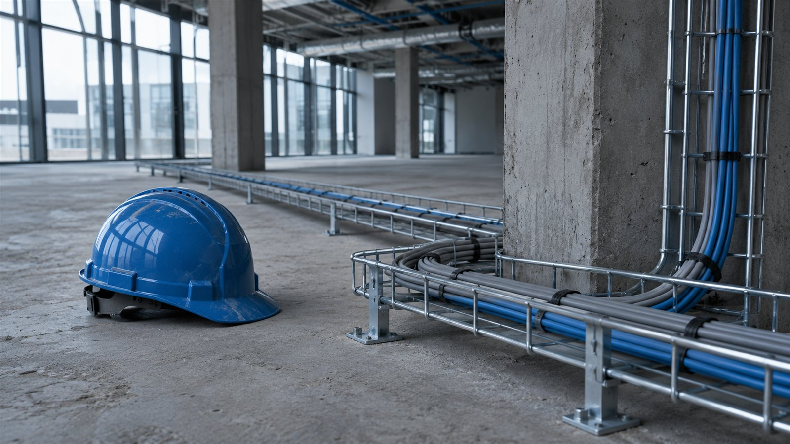

Пример · данные условные
Локальный расчёт / фрагмент
| Работа | Объём | Сумма, ₽ |
|---|---|---|
| Кабельная трасса | 120 м | 96 000 |
| Монтаж светильников | 24 шт. | 48 000 |
| Монтаж щита | 1 компл. | 36 000 |
Ремонт коммерческого помещения / кейс-концепт
От ведомости объёмов до локальной сметы с понятным составом затрат.
Посмотреть результатПример · данные условные
| Работа | Объём | Сумма, ₽ |
|---|---|---|
| Кабельная трасса | 120 м | 96 000 |
| Монтаж светильников | 24 шт. | 48 000 |
| Монтаж щита | 1 компл. | 36 000 |
Условный заказчик готовит помещение под мастерскую. Объёмы уже собраны, но предложения подрядчиков трудно сравнить: в каждом свой состав работ. Нужен единый расчёт, в котором видно, за что платят и какие исходные данные ещё надо уточнить.
Показываем последовательность работы на условном проекте.
Сверили ведомость объёмов, чертежи и границы работ. Пробелы вынесли в вопросы заказчику.
Связали каждую позицию с видом работ, единицей измерения и основанием расчёта.
Инженер по сетям проверил техническую логику и отсутствие повторного учёта.
Подготовили редактируемый файл, PDF и список допущений для обсуждения с подрядчиком.

В этом сценарии заказчик получает:
Условные укрупнённые суммы для демонстрации структуры. Это не действующая смета и не выгрузка программы.
Пример · данные условные
| Работа | Объём | Сумма, ₽ |
|---|---|---|
| Кабельная трасса | 120 м | 96 000 |
| Монтаж светильников | 24 шт. | 48 000 |
| Монтаж щита | 1 компл. | 36 000 |
15 000 ₽
Ориентир из прайса. Итоговый объём и стоимость согласуем по исходным данным.
2–5 дней
Срок считаем после получения согласованного комплекта данных. Ожидание внешних ответов обсуждаем отдельно.
Подготовьте исходные документы и желаемый результат.
Форма на сайте студии работает в демонстрационном режиме.